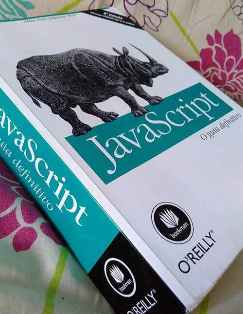

Tenho tido problemas pra organizar minha agenda e focar no que realmente tenho que focar. Sou extremamente motivado a desafios e análises de métricas do que faço. Tomando essas características como qualidades, decidi usá-las em prol de coisas que venho procrastinando há algum tempo. Um exemplo foi sobre aprender Python, conforme escrevi sobre isso aqui. Desde então tive dificuldades em conciliar horários pra estudar a linguagem e acabei parando no tempo.
Possuo mil desculpas, mas elencá-las aqui e eleger os vilões, seria inútil. Não há culpados além de mim mesmo. Quando consigo focar vou longe, conforme aconteceu quando decidi virar Forrest Gump e saí por aí correndo todo dia.
Baseado nos projetos de Jennifer Dewalt e de John Resig sobre escrever código útil diariamente, decidi me propor desafio similar. Dessa vez vou deixar o Python de lado por um tempo e vou focar em Javascript, pra procurar melhorar bastante minhas skills nessa linguagem. Além de continuar estudando HTML e CSS.
Assim como John Resig, vou colocar alguns parâmetros que seguirei à risca:
- Código tem que ser útil;
- Posso incrementar código antigo, mas tem que ser com uma técnica aprendida recentemente;
- O código não será necessariamente em JS, já que também estou estudando HTML e CSS;
- Escrever um post por trimestre aqui, contando minha evolução;
- Código deverá ser comentado em inglês (praticar o idioma);
- Sempre que possível, subir diariamente antes da 00:00h, o código no Github e colocar o link no meu daily-log;
- Se não for código, tem que ser algo trabalhado em um projeto. (Por exemplo técnicas, métodos e entregáveis de UX, UI).
- Obrigatório uma folga na semana :)
Agora vai!
O livro que vou estudar inicialmente vai ser o Javascript - Guia Definitivo de David Flanagan. Vou acompanhar o processo demonstrado no “guia” do Javascript is Sexy, mas ficarei livre para tentar outra abordagem, caso fique muito custoso para mim.

Segue abaixo os links para vocês me acompanharem nessa jornada.